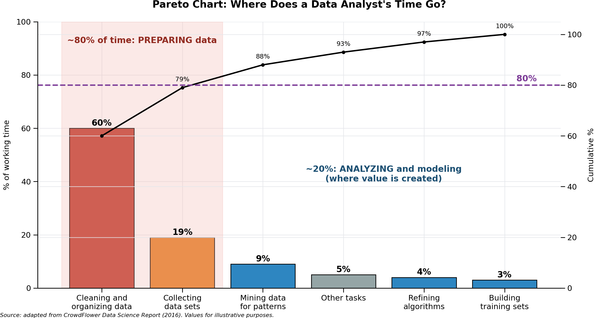

Recognize the most common problems of field data stored in spreadsheets
Apply the three rules of tidy data to a breeding trial
Turn a messy field book into a tidy dataset in R
Organize your own data with the course template, metadata and a data dictionary
Check your file in R before sending it
2.2 Why data organization matters
Most of the time spent on a data analysis is not spent on the statistics, but on preparing the data. A field book that is easy to read for a person (titles, merged cells, colours, totals) is usually very hard to read for a computer. The consequences are:
Lost time: hours of copying, deleting and reshaping before any analysis.
Silent errors: a missing plot typed as 0 is analysed as a real zero yield; a replicate written as text is not recognized; a value with its unit (4.2 t/ha) turns the whole column into text.
Results that cannot be repeated: manual changes in Excel leave no record, so nobody (including you, six months later) can know exactly what was done.

The 80/20 Rule of Data Work: Preparing vs. Analyzing Data.
If the data are organized well from the moment they are recorded, the analysis in R becomes a few lines of code. That is the goal of this chapter, and the reason why every participant prepares their dataset before the course.
2.3 What messy data looks like
The file data/messy_trial.xlsx contains the same M4 mutant trial that we used in Chapter 1, but written the way many field books are written in practice:
Figure 2.1: The practice trial stored as a typical field book in Excel.
The sheet is clear for a person, but it contains seven problems that prevent R from reading it correctly:
Only the first cell has a value; the others are read as empty
One variable spread over several columns
Yield and height repeated for each replicate
The replicate is a variable, but it is hidden in the column names
Two variables in one column
Entry: M4-01_mutant (genotype and type)
You cannot filter or group by each one separately
Units and codes inside cells
4.2 t/ha; missing plots as . and -
The column becomes text instead of numbers
Information only in colours, comments and summary rows
Red row, the comment on M4-08, the Mean row
Colours and comments are lost when reading; the mean row is read as a plot
Other frequent problems are a missing plot written as 0 (it looks like real data), dates written in different formats in the same column, several tables in one sheet, and the same genotype written in different ways (M4-01, M4 01, m4-01).
WarningNever save a course CSV file from Excel
Opening a CSV file in Excel and saving it again can change the separators and destroy the numbers (for example, 938.067907 becomes 938.067.907 with some regional settings). To look at a CSV file, open it in RStudio (View File) or close Excel without saving.
2.4 The three rules of tidy data
In R for Data Science, Wickham, Çetinkaya-Rundel and Grolemund describe a consistent way to organize data, called tidy data. A dataset is tidy when it follows three rules:
Each variable is a column, and each column is one variable.
Each observation is a row, and each row is one observation.
Each value is a cell, and each cell contains one value.
Three rules make a dataset tidy: variables are columns, observations are rows, and values are cells.
In a field trial, the observation is usually the plot. So a tidy field book has one row per plot and one column for each variable: the design variables (location, replicate, block, row, column, genotype) and the traits.
This is the tidy version of the trial in Figure 2.1:
# A tibble: 8 × 8
location rep row col geno check yield_t_ha plant_height_cm
<chr> <dbl> <dbl> <dbl> <chr> <chr> <dbl> <dbl>
1 Skopje 1 1 1 M4-01 no 4.6 86.3
2 Skopje 1 1 2 M4-10 no 3.77 93.4
3 Skopje 1 1 3 M4-06 no 3.24 84.3
4 Skopje 1 1 4 M4-02 no 4.04 88.8
5 Skopje 1 1 5 Parent yes 4.31 96.5
6 Skopje 1 1 6 M4-09 no 3.92 82.8
7 Skopje 1 1 7 M4-05 no 4.2 94
8 Skopje 1 1 8 M4-08 no NA 85
The replicate, which was hidden in the column names of the messy file, is now a column. The 12 genotypes × 3 replicates are 36 rows, one per plot.
NoteWhy tidy data works so well in R
dplyr, ggplot2 and the model functions (lm(), lmer(), SpATS()…) all expect one row per observation and one column per variable. With a tidy dataset, the formula of the model is written directly from the column names: yield_t_ha ~ rep + geno.
Sometimes you receive a messy file that you cannot correct by hand (for example, historical data). Here we fix messy_trial.xlsx step by step, with the readxl, tidyr and dplyr packages.
The title, the empty row, the two header rows, the merged cells (shown as NA), the mean row and the note at the bottom are all visible.
2.5.2 Step 2. Read only the data, with clear column names
range reads only the block with plot data (cells A5 to H16), which leaves out the title, the headers, the mean row and the note. na declares the codes used for missing values. The column names are written once, combining the replicate and the trait.
TipBuilding the names from the double header automatically
With many columns, writing the names by hand is slow. You can read the two header rows and combine them. Merged cells appear as NA, so the replicate is first filled to the right:
header <-read_excel("data/messy_trial.xlsx", range ="C3:H4",col_names =FALSE, .name_repair ="minimal")# Row 1: rep labels. Fill empty cells (from merged cells) with the value before themrep_row <- vctrs::vec_fill_missing(unlist(header[1, ]), direction ="down")# Row 2: trait namestrait_row <-unlist(header[2, ])# Join them into column names, e.g. "Rep1_height"paste(rep_row, trait_row, sep ="_")
Only the first row has the location; the merged cells were read as NA. fill() copies the last value down:
library(tidyr)# Show the location column before the fix (it has empty cells / NA)trial_wide$location
[1] "Skopje" NA NA NA NA NA NA NA
[9] NA NA NA NA
# Fill each NA with the last location above ittrial_wide <- trial_wide |>fill(location)# Show the location column again (now every row has a location)trial_wide$location
2.5.4 Step 4. Remove the units typed inside the cells
Because of 4.2 t/ha, the column R1_yield was read as text. parse_number() keeps only the number:
library(tidyverse)# Check the type of R1_yield before the fixclass(trial_wide$R1_yield)
[1] "character"
# Extract only the number from each value and turn the column into numerictrial_wide <- trial_wide |>mutate(R1_yield =parse_number(R1_yield))# Check the type again (now "numeric")class(trial_wide$R1_yield)
[1] "numeric"
2.5.5 Step 5. Separate two variables stored in one column
# Split the "entry" column into two new columns at the "_" separator# (the original "entry" column is removed)trial_wide <- trial_wide |>separate_wider_delim(entry, delim ="_", names =c("geno", "type"))# Show only the location, geno and type columns, first 3 rows,# to check that fill() and separate_wider_delim() workedtrial_wide |>select(location, geno, type) |>head(3)
The replicate is hidden in the column names (R1_yield, R2_height…). pivot_longer() moves it into its own column. With names_sep = "_", the first part of the name (R1) goes to the column rep and the second part (yield, height) becomes a column of values (.value).
# Make the table long: one row per genotype and reptrial_tidy <- trial_wide |>pivot_longer(cols =starts_with("R"), # columns R1_yield, R1_height, ...names_to =c("rep", ".value"), # "R1" goes to rep; yield/height stay as columnsnames_sep ="_") |># split names at "_"mutate(rep =parse_number(rep)) |># "R1" becomes 1rename(yield_t_ha = yield, plant_height_cm = height) # add units to the namestrial_tidy
36 rows: one per plot. This is the same information as the clean file.
2.5.7 Step 7. Check the result
Compare the tidy data with the clean file used in Session 1. No rows should differ:
# clean file used in Session 1.clean <- trial |>select(geno, rep, yield_t_ha, plant_height_cm)# Find rows in "clean" that are NOT in "trial_tidy" (matching on all 4 columns)# 0 rows = our cleaned version matches the originalanti_join(clean, trial_tidy, by =c("geno", "rep", "yield_t_ha", "plant_height_cm"))
An empty result means that the two datasets are identical.
NoteWhat about the colours and the comment?
The red row and the comment on M4-08 (damaged by hail) cannot be read by R. That information must be stored as data, for example in a column damaged with the values yes / no. Information that exists only as a colour is usually lost.
2.5.8 The opposite: from long to wide
Sometimes a wide table is useful, for example to present yield per replicate in a report. pivot_wider() does the opposite of pivot_longer():
# This is the opposite of pivot_longer(). It gives a table that's easier for people to read, # with each genotype's reps side by side.trial |>select(geno, rep, yield_t_ha) |>pivot_wider(names_from = rep, values_from = yield_t_ha, names_prefix ="rep_") |>head(4)
The rule is: store and analyse the data in long format; make wide tables only to present results.
2.6 The course field book template
To avoid all these problems, organize your data with the template data/template_field_book.xlsx. It has three sheets: instructions, field_book and dictionary.
The field_book sheet has one row of column names and one row per plot:
Column
Content
Example
Required
location
Site of the trial
Skopje
yes
year
Year of planting
2025
yes
trial
Trial name or code
M4_yield_2025
yes
generation
Generation of the mutant material
M4
yes
design
Experimental design
RCBD
yes
plot
Plot number
17
yes
rep
Replicate
2
yes
block
Incomplete block (if the design has them)
5
if any
row, col
Position of the plot in the field
3, 8
recommended
geno
Genotype, mutant line or variety
M4-07
yes
check
Is the entry a parent or check?
yes / no
yes
traits
One column per trait, with the unit in the name
yield_t_ha
yes
TipRules for the template
One table per sheet. The header in row 1 only, with no titles or empty rows above it.
No merged cells. Repeat the value in every row (for example, the location).
Only numbers in trait columns. Put the unit in the column name (yield_t_ha), not in the cell.
Leave missing values empty. Do not use ., -, NA or 0.
No colours or comments as information: add a column (damaged, notes).
No totals or means inside the data: calculate them in R.
Simple column names: lower case, no spaces or accents (plant_height_cm).
Write genotype names always the same way (M4-01, never M4 01 or m4-01).
Save the sheet as CSV UTF-8 when you send it.
2.6.1 Why the metadata matter?
The design columns are not decoration: each one becomes a term of the statistical model.
Column
Used for
rep, block
Separating environmental variation from genetic variation (Day 2 and Day 3)
row, col
Spatial analysis of field trends (Day 4)
location, year
Multi-environment trials and G×E (Day 5)
generation, check
Comparing mutant lines with the parent (Dunnett test, Day 2) and decisions on advancement (week 2)
A trial without row and col cannot be corrected for spatial trends; a trial without rep cannot be analysed as a designed experiment. Record them in the field from the beginning.
2.7 The data dictionary
A column name such as DF or SW100 is clear for the person who recorded it, but not for a colleague or for you two years later. A data dictionary describes every column of the field book: what it is, its type, its unit and its possible values. It is the dictionary sheet of the template.
This is the dictionary of the practice trial, stored in data/precourse_trial_dictionary.csv:
dictionary <-read_csv("data/precourse_trial_dictionary.csv", na =character())knitr::kable(dictionary)
variable
description
type
unit
values_or_scale
how_measured
location
Site of the trial
text
Skopje
year
Year of planting
integer
2025
generation
Generation of the mutant material
text
M4
plot
Plot number
integer
1 to 36
rep
Replicate (complete block)
integer
1 to 3
row
Row position in the field
integer
1 to 3
col
Column position in the field
integer
1 to 12
geno
Mutant line, parent or check
text
M4-01 to M4-10, Parent, Check
check
Is the entry the parent or a check?
text
yes / no
yield_t_ha
Grain yield adjusted to plot area
numeric
t/ha
Grain weight per plot converted to t/ha
plant_height_cm
Plant height
numeric
cm
Ground to top of the main stem, mean of 5 plants
days_to_flowering
Days from sowing to 50% flowering
integer
days
Counted from sowing date
disease_score
Disease severity
integer
score
1 (no symptoms) to 9 (very severe)
Visual score of the whole plot
NoteScales and scores
For traits scored on a scale (disease, vigour, lodging), write in the dictionary what each value means, for example 1 = no symptoms, 9 = very severe. Two people using different scales on the same trial is one of the most frequent and least visible errors in field data.
Cassava Plant type
2.8 Checking your file in R
The function check_dataset() reads a CSV or Excel file and reports the problems described in this chapter. It does not change your file.
source("R/check_dataset.R")
The clean practice trial passes the check:
check_dataset("data/precourse_trial.csv")
Rows: 36 | Columns: 13
[i] Genotypes: 12 | Replicates: 1, 2, 3
Missing values per column:
location year generation plot
0 0 0 0
rep row col geno
0 0 0 0
check yield_t_ha plant_height_cm days_to_flowering
0 2 0 0
disease_score
1
No problems found. Your file looks tidy.
The messy field book does not:
check_dataset("data/messy_trial.xlsx")
Rows: 18 | Columns: 8
Column names cleaned, for example: 'Mutant trial M4 - Skopje 2025 - RCBD with 3 replicates' -> 'mutant_trial_m4_skopje_2025_rcbd_with_3_replicates'; '...2' -> '2'; '...3' -> '3'
[!] Missing required columns: location, year, rep, geno
[!] Very long column name: is there a title or note above the header?
Delete it, or read the file with read_excel(file, skip = 1)
[!] Empty or unnamed columns (merged cells or double header?): 2, 3, 4, 5, 6, 7, 8
[!] Column '4' is almost all numbers but has text: Height (cm)
[!] Column '5' is almost all numbers but has text: Rep 2 | Yield (t/ha)
[!] Column '6' is almost all numbers but has text: Height (cm)
[!] Column '8' is almost all numbers but has text: Height (cm)
[!] Missing values typed as codes (leave the cell empty instead):
3 7
1 1
[i] No row/col coordinates: spatial analysis will not be possible
Missing values per column:
mutant_trial_m4_skopje_2025_rcbd_with_3_replicates
15
2
4
3
4
4
5
5
4
6
5
7
4
8
5
8 problem(s) found. See the [!] lines above.
Run it on your own file and correct each [!] line before sending your data.
2.9 Digital data collection: Field Book and GridScore NEXT
Recording data directly on a phone or tablet avoids transcription errors and produces files that are already close to tidy: one row per plot, with the plot identifier and its position.
Field Book
GridScore NEXT
Developed by
PhenoApps (open source)
James Hutton Institute (open source)
Devices
Android phones and tablets
Any device with a web browser (Android, iPhone, computer); works offline
Generate the field layout (randomization) with FielDHub (Day 2) or your own tool, with one row per plot and the columns plot, rep, row, col and geno.
Import the layout into the app.
Define the traits with their type, unit and valid range, using the data dictionary. A valid range prevents typing errors in the field (for example, a plant height of 950 cm instead of 95.0).
Collect the data plot by plot in the field.
Export the data and read them in R. Check them with check_dataset().
2.10 Exercise (homework before arriving in Skopje)
Part 1. Using trial_tidy from this chapter:
Calculate the mean yield of each genotype across the three replicates.
Make a wide table of plant height with one column per replicate.
Add a column damaged with the value yes for M4-08 and no for all other genotypes.
Part 2. Prepare one dataset of your own:
Organize it with template_field_book.xlsx (one row per plot) and complete the dictionary sheet.
Save the field book as CSV UTF-8 and run check_dataset() on it.
Correct every [!] line and send the file and the dictionary to the instructors before the course.
TipSolution (Part 1)
# 1. Mean yield per genotypetrial_tidy |>group_by(geno) |>summarise(yield =mean(yield_t_ha, na.rm =TRUE)) |>arrange(desc(yield))
# 3. A column instead of a colourtrial_tidy <- trial_tidy |>mutate(damaged =if_else(geno =="M4-08", "yes", "no"))count(trial_tidy, damaged)
# A tibble: 2 × 2
damaged n
<chr> <int>
1 no 33
2 yes 3
2.11 Key takeaways
A tidy dataset has one column per variable, one row per observation (plot) and one value per cell.
Merged cells, double headers, units inside cells, missing-value codes, colours and summary rows are the most common problems of field books.
read_excel(range, na), fill(), parse_number(), separate_wider_delim() and pivot_longer() fix most of them in R; but it is better to record the data tidy from the beginning.
Design columns (rep, block, row, col, location, year) become terms of the statistical model: record them in the field.
A data dictionary makes your data understandable for others and for yourself in the future.
Check every file with check_dataset() before the analysis.
2.12 References
Wickham, H., Çetinkaya-Rundel, M. & Grolemund, G. (2023). R for Data Science, 2nd edition, chapter “Data tidying”. O’Reilly. https://r4ds.hadley.nz/data-tidy.html